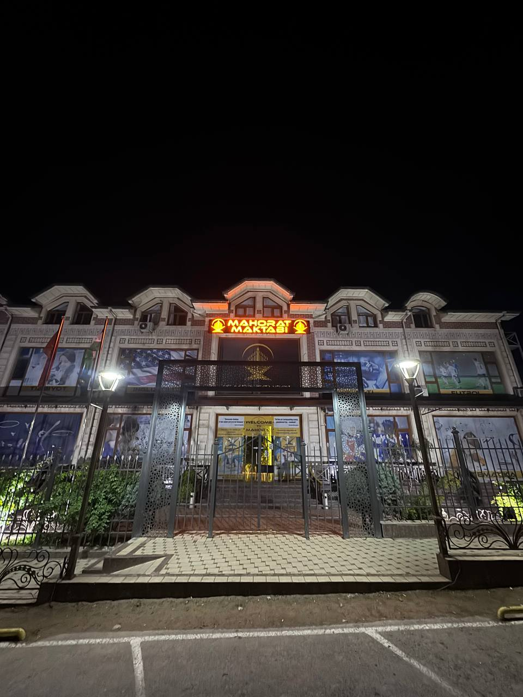

+998 90 123 45 67 raqami orqali qabul bilan bog‘lanish mumkin. Ish vaqti davomida murojaatlar qabul qilinadi.
Bog‘lanish, qabulga yozilish va maktabga tashrif buyurish bo‘yicha ma’lumotlar
Siz qabulga yozilish, maktab joylashuvi yoki dars tartibi bo‘yicha kerakli ma’lumotni shu sahifadan topishingiz mumkin.
TelefonManzilQabul

Bog‘lanish usullari
Telefon, tashrif va elektron aloqa orqali maktab bilan bog‘lanish mumkin.
info@mahoratmaktabi.uz manzili orqali yozma murojaat va hujjatlarni yuborish mumkin.
Namangan shahri, qulay kirish yo‘li va o‘quvchi olib kelish uchun mos hududda joylashgan.
Dushanbadan shanbagacha qabul va ma’lumot berish ishlari olib boriladi.
Qabul uchun kerakli ma’lumotlar
Ariza topshirish jarayoni sodda bo‘lishi uchun asosiy bosqichlar oldindan ko‘rsatilgan.
Ism, yosh, sinf va bog‘lanish raqami bilan dastlabki murojaat qoldiriladi.
O‘quvchi va ota-ona bilan qisqa uchrashuv belgilanadi, kerakli yo‘nalish aniqlanadi.
Ba’zi guruhlar uchun moslashtiruvchi qisqa mashg‘ulot o‘tkazilishi mumkin.
Bo‘sh o‘rin va guruh mosligi tasdiqlangach, dars boshlanish sanasi belgilanadi.
Tez-tez so‘raladigan savollar
Qabul va ta’lim jarayoniga oid eng ko‘p beriladigan savollar qisqa javob bilan jamlangan.
Asosiy qabul bosqichlari mavsum bo‘yicha yuradi, lekin bo‘sh o‘rin mavjud bo‘lsa qo‘shimcha qabullar ham ochilishi mumkin.
Oldindan yozilish orqali maktab muhiti va ayrim mashg‘ulotlar bilan yaqindan tanishish imkoni beriladi.
Filiallar manzili
1-filial va 2-filial joylashuvi
1-FILIAL
Asosiy filial
Namangan, Iqro IT-MED School yaqinidagi filial. Qabul va ma’lumot olish uchun qulay joylashuv.
2-FILIAL
Qo‘shimcha filial
Namangandagi ikkinchi filial joylashuvi. Tashrifdan oldin telefon orqali bog‘lanib, sizga mos manzilni aniqlashingiz mumkin.